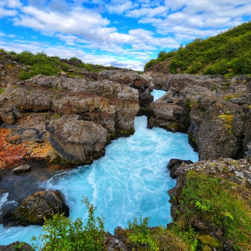
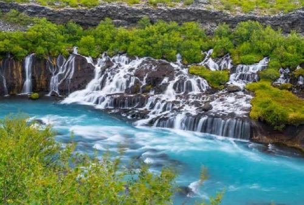
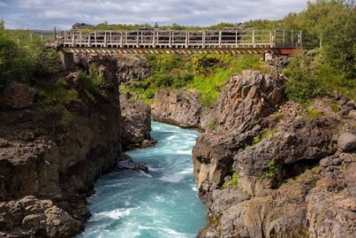
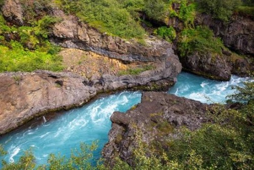
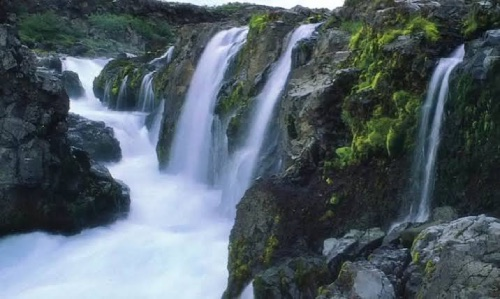

Barnafoss
Barnafoss er fallegur foss sem er staðsettur í Hvítá í Borgarfirði á Vesturlandi. Fossinn er nálægt Hraunfossum og eru báðir fossarnir vinsælir ferðamannastaðir og margar fara að skoða til dæmis um sumrin eða haustin. Barnafoss er þekktur fyrir mikinn straum og blágrænt vatnið sem rennur hratt í gegnum hraunið og þröngt gljúfur.

Um Barnafoss
Barnafoss hefur þekkta þjóðsögu sem segir frá tveimur börnum sem bjuggu á bænum Hraunsási. Börnin fóru með fólkinu á bænum til kirkju en urðu eftir þegar hinir fóru heim. Þau ákváðu að stytta sér leið heim og gengu yfir steinboga sem lá yfir fossinn. Börnin misstu jafnvægið og féllu í ána og drukknuðu. Þessi saga er mkið þekkt þegar fólk og ferðamenn koma að fossinum og vilja skoða hann. Þessi saga hefur verið sögð í mörg ár og er ennþá þekkt í dag.



